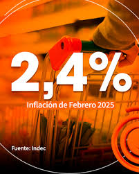
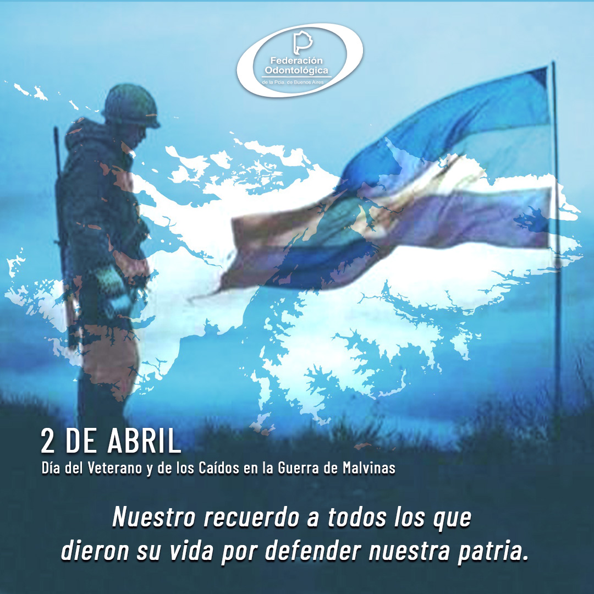
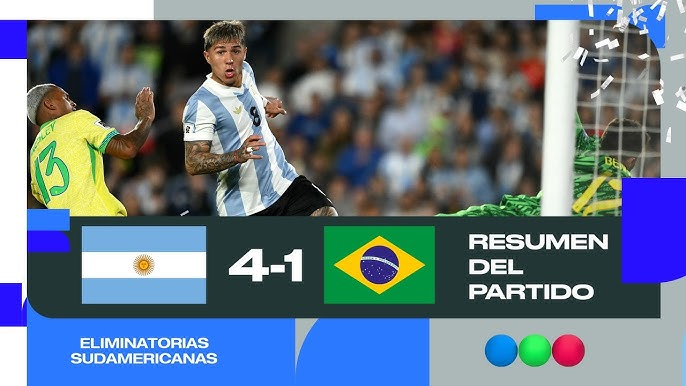

La inflacion que marcó el indec fue del 2.4%

La inflación e el ultimo mes fue del 2.4%, la inflacion interanual es del 69,2%
Link a la noticia completaDía del Veterano y de los Caídos en la Guerra de Malvinas.

El Día del Veterano y de los Caídos en la Guerra de las Malvinas es una fecha de conmemoración de Argentina en la que se recuerda y homenajea todos los 2 de abril a quienes dieron la vida defendiendo la soberanía sobre las islas Malvinas.
Link a la noticia completaClaudia Sheinbaum responde tras imposición de aranceles de EEUU

La mandataria mexicana rechazó el comunicado "ofensivo, difamatorio y sin sustento" sobre su gobierno
Link a la noticia completaArgentina le gano a Brasil 4 a 1 en el estadio "Mas monumental"

El conjunto de Lionel Scaloni se impuso por 4-1 en el estadio Monumental, por la 14ta. fecha, y celebró de la mejor manera su pasaje al Mundial de Canadá, México y Estados Unidos 2026.
Link a la noticia completa